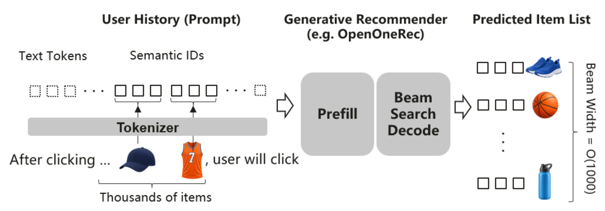
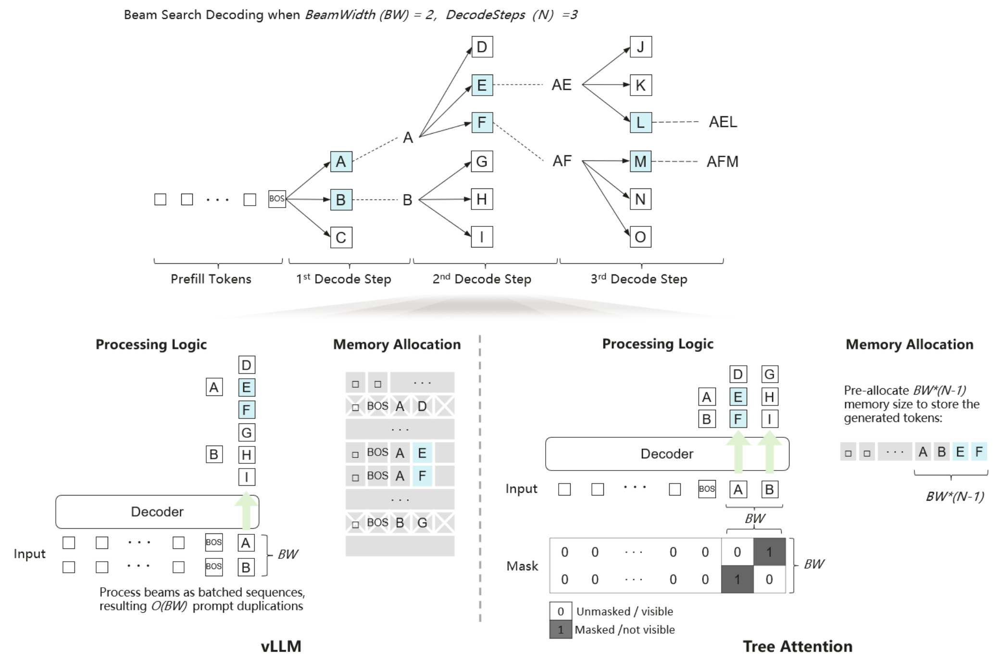
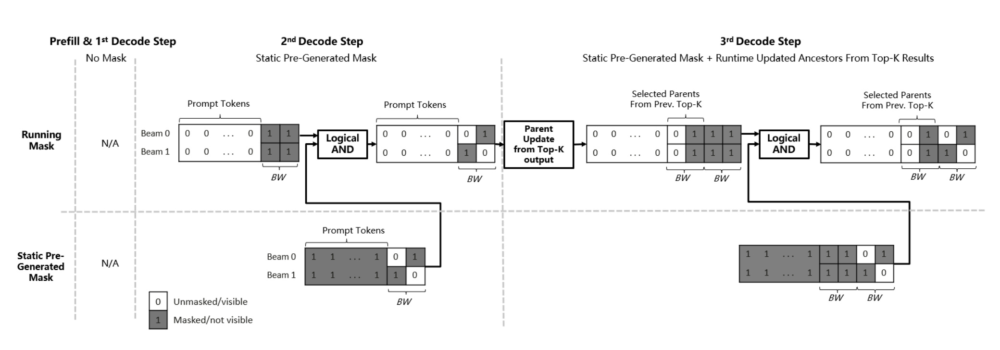
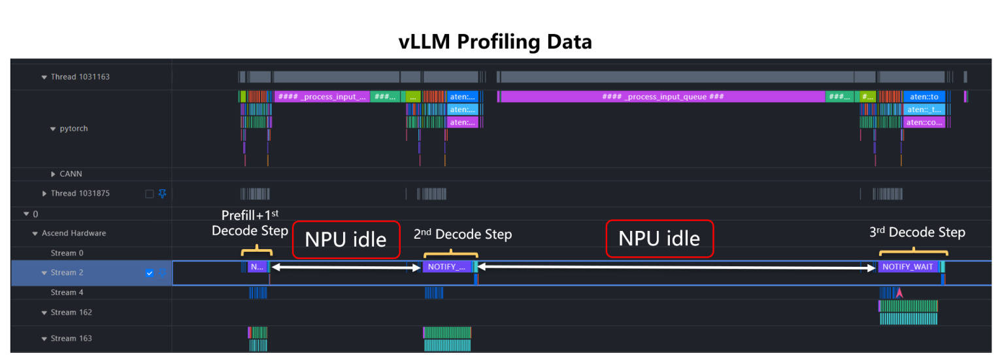
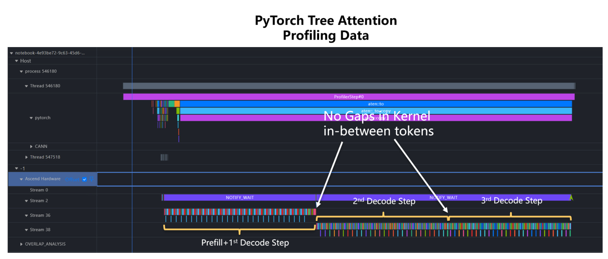
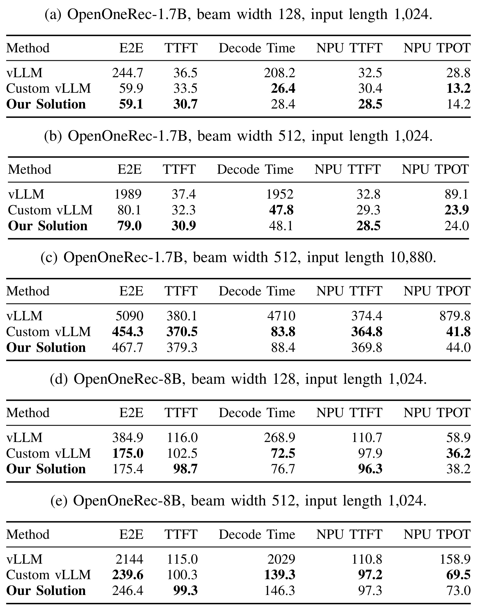
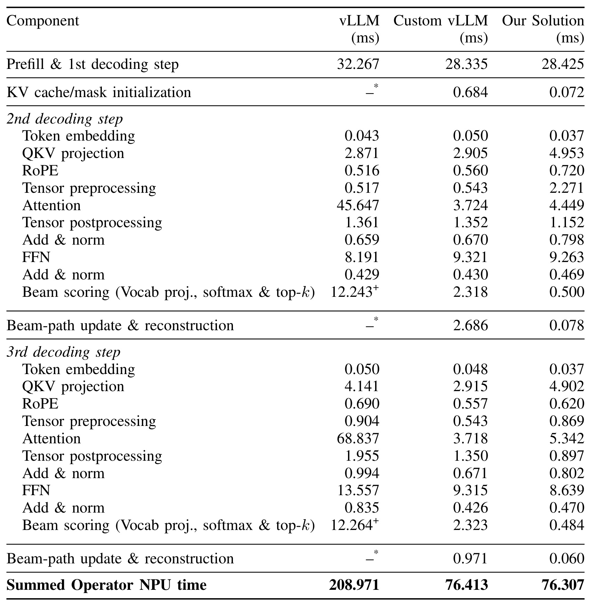

Optimize the Cob, Then the Kernel：生成式推荐的束搜索如何压低端到端延迟
华为的 Shing Wai Pun、Kai Wu、Pengfei Xia、Hui Zang、Wei Guo 和 Yong Liu 研究的是 OpenOneRec 三位语义标识符的推理执行。作者把宽束搜索的共享提示词、祖先可见性和固定输出深度转换成昇腾设备上的静态执行图，并与启用前缀缓存的 vLLM Ascend 和带定制注意力算子的实现比较。论文于北京时间 2026 年 11 月 17 日提交 v1，列于 arXiv 11 月 19 日公开列表。PDF 写明代码将公开，本轮尚未核验到论文专属公开仓库。arXiv:2611.23339
生成式推荐通常同时使用较长输入、很宽的束搜索和少量固定输出 token。把每条束当成独立序列会反复访问相同的提示词 KV，而每次生成一步就返回主机还会引入束处理和分页缓存管理开销。
1. 背景和问题
传统推荐通常按「从目录取候选、再按特征打分」组织，生成式推荐则让模型根据历史直接输出商品编码。这里的商品编码来自三个阶段的残差量化。先用商品多模态向量找最近的第一层聚类中心，再从原向量里扣去这个中心，用余量到下一层找代表，最后对剩余误差再做一次。每一级中心的编号成为一枚语义标识符 token，三个编号共同标记一个输出。前一级倾向于表达较粗的类别，后一级提供更细的区分。因此多个商品可以共享前缀，一个热门类目可在第一步只留下同一个编码，后两步继续打开不同商品。模型按条件自回归地产生这三个编号，束搜索保留多个候选路径。本文从已有权重的执行开始，SID 词表、输入映射和生成模型都属于上游约定，模型怎么训练或用户行为经过怎样的采样并不在本轮比较内。

Figure 1 的左侧混排普通文字 token 与历史商品的 SID，最下方用点击过的帽子、球衣举例，提示读者一条历史中能容纳大量商品事件。用户侧商品经过分词器以后变成提示词的一部分，供模型在第一次预填充时整体处理。中间的框把预填充与束搜索解码分成两个阶段，右边的每一行只有三格编码，括号沿纵向标出束宽可以到千级。左边横向是同一个用户历史展开的长度，右边纵向是同时活跃的候选路径数量，三个输出位置则决定解码步数。这三个尺度控制的是不同的负载。长历史推高首 token 的预填充和后续注意力读量，宽束增加同一个历史被大量查询反复读取的机会，固定三步则给预分配、固定调度与融合留下了空间。图中的千级束宽是在任务定义处给的量级示意，结果表只实际列出一百二十八和五百一十二两种宽度。右侧的小商品图标是在说明编码还需要映射回目录，本文计时也没有给出目录映射或后续精排的单独账单。
这里存在两种不同层次的共享。第一种是在显存页表里让多个逻辑请求指向同一份提示词数据。开启前缀缓存后，多个束可以复用已填满的 KV 块，存储页上并不必然完整复制提示词。第二种是让设备计算时的多个 query 在同一算子分块中复用读取进来的键值，减少显存访问。只实现第一种时，注意力核仍可能按 batch 中的每条序列独立安排，物理索引虽然一样，在算子眼里却是多个独立工作单元。同一个历史由哪些 query 共用，需要在设备调度或张量布局上表达出来。这正是该论文避免用「启用了前缀缓存」替代实际访存证据的地方。两种实现还要分别观察 KV 容量和实际带宽，不能把显存占用下降直接解释成读流量同比例下降。
在论文所测普通 vLLM Ascend 路径中，外层以一次生成一枚 token 的方式反复调用通用引擎。设备先输出候选和分数，主机更新束与新请求，调度器再为下一步匹配前缀、增减引用、分配或回收 KV 块，然后把后续计算送回设备。束越宽，主机需要处理的路径相应越多。分页缓存对通用服务有现实价值，允许不同长度序列共享存储池，也能支持请求混合与动态结束。这里的特殊之处在于每条束新增的 token 只有几枚，而被测后端的一个块包含一百二十八个 token 位置。各束私有的后缀往往占用不到一块，块内空位仍要随束宽增长。前缀缓存只保留填满块，部分块在下一步重新作为请求提交时可能被释放后重建，产生额外的历史后缀计算。作者还单独指出设备在主机处理期间可能直接空转。这部分时间肉眼在算子计数中看不到，端到端指标才能把它体现出来。
在可比较的设计里，xGR 已经说明共享提示词可由专门算子来利用。其 xAttention 把缓存分成公共提示词段和各束私有段，分别做注意力，然后用在线 softmax 合并两个分区的结果。分区归一化必须按全局正确的权重合并，否则同一个 query 会相当于对公共段和私有段分别分配概率总量。该设计还需要在每步选束以后按父索引调整私有区，如果两个活跃候选来自同一个父路径，系统要安排可以继续读取的共享或副本。UniSGR 介绍过用树注意力和重组缓存处理相同方向的问题。本文具体研究设备执行图怎样覆盖三步依赖、何时创建祖先可见矩阵、路径孰去孰留之后 KV 要不要重排，以及由哪些张量写操作承担成本。
部署场景对方法的要求来自两个外延不同的时钟。一个时钟由模型构成，涵盖预填充、算子执行、候选选优与剩余 token 解码。另一个时钟由实际推荐系统构成，从客户端请求、特征拼装、召回、过滤、打分到回包。论文提到推荐推理常见十至百毫秒量级的预算，因此减少空转很有现实驱动力，但实验给的是单卡上的引擎链路计时。它可以和收到同一个预处理输入后的模型服务耗时做对照，要判断有没有进入应用预算，还得把实际路由、排队和下游模块放回计算。如果历史特别长，第一次模型前向很重，剩余两步即使接近最优，也难以满足很紧的整条链路时限。反过来在较短输入、很宽的束上，如果待优化时间主要落在主机和调度中，继续写一个更快的注意力核也不会按该核的加速倍数缩短用户等待。
这篇文章切出的工程问题就是，给定相同的提示、模型权重、搜索宽度与固定输出深度，能否在维持所观察到的生成准确性的同时，把服务软件为通用长度保留的管理工作变成固定且较便宜的设备运算。关键约束有两条。第一，数据的物理共享不应改变数学上每条束能看见哪些 token，尤其在同一父路径产生多个优胜后继时；第二，完成相同选束决策之后，可以延后整理路径，但输出端仍要按正确顺序给出每条完整 SID。这个设定将生成式推荐的效率瓶颈从单一层里的矩阵乘扩展到「读历史、选候选、更新状态、重建输出」之间的信息流，也让模型规模、历史长度和候选宽度成为应该分开扫的三个维度。
2. 方法
2.1 树注意力
设备端先把提示词视为一个公共序列。一轮解码留下的活跃 token 连续追加到同一个序列轴上，为下一轮形成一组查询。每条束依然有自己的分数和父索引，压平只改变物理计算布局。对于候选的 query，注意力键值包括公共提示词、祖先及当前位置。若把所有较早写入的 token 都用普通的因果三角掩码开放，排在后面的候选会看到不同束的 token，模型就会从并非自身历史的商品编码里读取信息。因此这里「处在同一序列位置轴」和「属于同一条生成序列」必须由不同信息表述。

Figure 2 顶部从一个开始标记分出去，第一步留下 A 和 B，第二步在不同父路径的后继里留下 E 和 F，而 E 与 F 都来自 A。到了第三步，合法的两条上下文为 AE 和 AF，可在图上连到 AEL 与 AFM 这样的示例输出。这显示全局选出的两束可以同时移向同一个父节点，更新时逐行保留上一轮同位置的历史会错把另一个父节点带入。下面左侧是普通批维组织，把公共提示词和不同尾部组合为多个独立序列，各查询对共用前缀也独立执行计算。缓存管理示意中可以看到继续存活的分支与被划去的候选。右侧把 A、B 追加在一份提示词后面，并给两行 query 的末尾交叉打上互斥掩码。一行读 A 不读 B，另一行读 B 不读 A。后续两个都从 A 展开时，下一步应让两行同时读 A，再按自身是 E 还是 F 打开相应位置。论文图例把零定义成可见，黑格一代表遮住。固定区域预留的槽数写在右侧，图中的序列扁平化和下节的静态空间由同一个固定束宽约束。这个例子还把路径正确性与显存布局解耦：可以将已剪掉的 B 留在原来的 KV 槽中，下一步只要两条束都看不到它，B 依然不会进入任何有效上下文。图中灰色分支也不都意味着缓存中有一个候选槽。参与词表打分的是更多候选，能作为下一步输入写入缓存的是当轮选中的有限个 token。把落选前原本已经写过缓存的状态留下，和为所有新枚举的后继分配持久缓存，是两个不同的设计。否则将词表大小乘束宽来估计静态缓存，会高估本文在固定形状下需要的地址空间。
设第 $i$ 个查询的键列为 $j$，模型产生查询、键、值 $Q,K,V$，单个头的键维数是 $d$。式（1）将屏蔽位置的注意力分数送到负无穷：
式（2）给出共享提示词和祖先的并集：
符号解释： $\mathcal P$ 是公共提示词的位置集合，$\operatorname{Path}(i)$ 包含当前 token 的祖先及自身。按每行取 softmax 时，屏蔽列既不贡献分子，也不贡献归一化分母。保留列的张量若与独立执行一致，便可得到相同因果可见范围。实现直接把二值矩阵给昇腾的融合 FlashAttention，没有在设备上显式构造一个巨大实数惩罚。还有一个容易被压平示意隐藏的条件：位置编码应按真实逻辑路径和生成步数解释。在第三步同一轮各束的 token 虽占用不同物理槽，不能据此把后放的束解释成经历了更多语义位置。作者表 II 将 RoPE 单列为设备算子，论文没有逐行公开位置编号的实现。要移植或做数值一致性验收，需要同时对齐祖先集合、有效位置、归一化和候选选优规则。
该张量组织减少的是重复请求式访问。前缀对不同 query 的打分本身仍然发生，因为每条路径的 query 不同，需要在共享前缀上得到相应的权重。对于长提示词且宽束多的组合，复用同一份提示读取可能缓解带宽消耗，输出价值依赖于所用算子的分块、头维、缓存布局和可见模式。也因此不能只数「公共提示词没有复制」就声称算法把注意力的有效乘加次数压到了单束的规模。论文后面的分解表测得其注意力段比普通基线快很多，但仍慢于专门设计的 xAttention；这项差距与使用共享缓存这一逻辑结论可以同时为真。
2.2 部分掩码预生成
静态图能提前知道哪一步开始有上一轮缓存，能知道提示词长度、各步新增槽和同一步哪些位置必须互相隔离，无法提前知道同一个父节点是否会产生两条胜出路径。论文把这两个层次拆成静态的 $S_t$ 与运行中的 $R_t$。前者按支持的输入长度与束宽建立，后者维护前几步留下的真实祖先关系。作者使用的零为可见约定意味着把两张「只会打开合法已有位置」的掩码按位与，正好在任一图标为零时打开相应位置。把文章操作按步记成下式，$\pi_t$ 是候选全局选优以后每个新束对应的父行，$\operatorname{Gather}$ 指沿父行读取上一轮已经合并过的祖先可见信息：
这是对论文描述的机制记号，实际整张工作掩码还要按静态缓存区域初始化并遵循对应步的布局。它也解释了为什么两张掩码不能各自随意打开一些与当前步无关的槽。按位与在可见性语义下是可见集合的并集，只要任何一张把非法键置零，就可能把错误位置传播到输出。

Figure 3 从左向右对应预填充与第一枚输出、第二枚输出及第三枚输出，上下两行分别是运行掩码和预先生成的步掩码。左端注明首段不用显式束掩码，此时提示词按标准因果注意力处理。第二步中，上面的运行掩码把公共 prompt 设为可读，下面的静态掩码把每条束对自己最新槽的可见性补齐，合并后的各行因此只开放各自路径。图中央的父更新框收到 top-k 索引时，两个输出都从 Figure 2 的 A 来，故同一父行可被 gather 两次，第三步两条束都读到 A，互相仍看不见同一轮里属于对方的 E 或 F。图中较浅的槽、阴影格以及左右两步新增位置的区分让这套更新可以直接按小规模样例检查。若换成 E 来自 A、F 来自 B，第二步的静态掩码形状仍可复用，变化的是运行部分所取的父行。掩码保持的是每层都需要的可见关系，更新一次可以传给各层的注意力。作者在提示词一千零二十四、束宽五百一十二时给出约四 MB 静态掩码和每活跃请求一 MB 运行掩码。若存在多个尺寸档和多路并发，前者随预存档位增加，后者随同时在途请求增加，图中单个配置的数字不宜视为整台机器的最大开销。比较两栏工作量时，真正发生设备状态变动的是父选择和随之更新的少量可见行。保存一张静态布尔图允许不同层共用几何结构，但每层保存的键和值仍各有一份。这样也能解释为何改用布尔掩码只减少梯度无关的推理状态搬运，模型权重和上游提示的历史表征均沿用原来定义。对越过三步的形状，应重新估算掩码的行列积而非机械复用这组容量。
2.3 静态缓存与三步循环展开
固定输入档位和束宽后，系统能把缓存地址及每步写入区域提前算出来。用 $P$ 表示共享提示词长度，用 $\mathrm{BW}$ 表示束宽，$N$ 表示输出位置数量，作者给出的 KV 槽数为：
提示词只有一份。前三步里只有前两步选出的 token 还要被后续 query 消费，最后一枚 token 在此任务即提交生成结果，没有第四次读取当前这一步输出 token 的 KV，因此不必为它再预留一层槽。比如 $P=1024$、$\mathrm{BW}=512$、$N=3$ 时，该表达式给出二千零四十八个 token 槽。这个数描述的是布局容量，不是字节数，也没包括候选打分、运行掩码、权重、并发或编译器工作区。KV 实际字节还取决于层数、局部键值头、维度、精度和底层对齐。如果以后任务要输出更多位置或追加解释，$N$ 改变会影响静态池大小、掩码和预编译图，原先能省略的最后位置也要按新终止条件重新判断。
实际发生分叉或剪枝后，旧 KV 仍留在其初次写入位置，下一步只更新共享的掩码与索引，避免逐层把大块键和值按父束重新搬一次。恰好某个父节点有多个孩子时，多个 query 行可以访问它同一个 KV 槽。原有方案在类似情况下要处理父缓存复制、重排或间接寻址。固定密集布局以保存废弃槽为代价换掉动态维护，在固定三步时，废弃状态的存活跨度很短。扩大步数、增加束宽或引入提前终止时，可能有更多物理位置只被掩码挡住，省去搬运换来的静态容量应在目标形状下重新检验。开放到在线多请求共存时，各请求的提示、运行掩码、候选索引和写入区也必须彼此隔离，论文的单卡配置结果没有披露具体多流分配策略。
系统把三步循环全部展开成一个设备计算图。第一步接收提示词并形成第一批候选及分数；第二步按第一批分支计算注意力、累加候选分数、取全局高分并写入下一阶段所需状态；最后一步生成剩余编码，再按索引重建完整路径。步与步间的候选分数、束索引、注意力掩码和 KV 都不回到主机，设备图可以直接表达数据依赖。输出每一步仍然依赖上一轮的实际 top-k，静态图固定的是执行节点和张量形状。三枚 SID 没有被改造成单次并行预测。还需要在输出端保持父索引与累计分数的正确配对。如果某一轮先处理打分、下一轮才更新路径，全图中这两个状态要绑定同一次选择，否则可能出现表面时延达标而最终 SID 拼接错误的结果。
2.4 TorchAir 静态图编译与融合
论文按预设的输入长度档位提前编译 TorchAir 图，运行时选能容纳请求的合适图，提示短于档位就补齐。算子因此拿到固定的形状与地址布局，可以在编译时做分块与调优，并把一次请求交给设备图执行。较粗的长度档数量少、容易预热，但会给实际较短的提示增加填充运算；较密的档减少补齐浪费，却需要保管、加载和保温更多图。作者实验排除了编译和预热耗时，因此表内能看到稳态路径的收益，无法用表中单个请求耗时估计大批模型实例变更时的编译储备和恢复时间。
论文区分了三类优化。张量视图优化尽量把能通过步幅与维度解释实现的 reshape、转置留在视图层，降低 Q/K/V 和掩码处理的拷贝。图模式优化把符合条件的残差相加和 RMS 归一化等相邻算子合起来，减少中间张量写回显存。Unified Buffer 融合将合适的连续运算放在编译器生成的设备核中，使临时结果留在片上缓冲区。作者同时调用了硬件厂商已有的融合算子。因此论文所称「无定制核」指无需为该方案专门手写新的底层核，推理程序仍依赖昇腾现成的算子和 TorchAir 的图编译支持。对应到其他后端，能否得到相近的时延差，需要验证其图捕获能不能覆盖 top-k、掩码更新和路径输出，也要实测视图是否真的没有展平为隐式复制。
2.5 语义标识符限制解码
最终要选择商品编码而非任意词表 token，论文据此把限制提前到输出投影。以 $h$ 表示输出位置的隐藏向量，$W$ 表示原来的输出权重矩阵，$\mathcal V_t$ 表示该步使用的 SID 候选子集，受限投影可写为：
这一式子只是把原文机制写成矩阵索引。保留合法行的乘法结果与从完整投影里按同样索引取值在数学上对应，但完整词表的归一化与合法子集的归一化具有不同分母。对同一个父束，变换分母不会改变该束内部候选的相对顺序。跨父束合并时，父束各自丢掉的非法词表概率质量可能不同，累计路径的比较可能改变。因此接入时应该照着基线的语义核验究竟是先约束后归一化，还是只限制最终选择，再按目标定义校验。论文报告三种实现没有观察到准确性损失，没有给出对每个路径的逐 logit 或端点排序一致性协议。还应区分某一层允许的 SID token 与组合前三层后必定映射到真实商品。合法索引减少到八千一百九十二，说明处理的候选维缩小；目录中所有三元组怎样查验、去重与过滤，在该结果里没有单列。
在 OpenOneRec 上，每束原词表维度是十七万六千三百八十四，合法范围的维度为八千一百九十二，候选维的比例约二十一点五倍。投影先缩小以后，后面的 log-softmax、全局候选比较和 top-k 也只处理这个较窄输出。基线如果只在最后选择时过滤，前面的投影仍会为大量无关项做算术和张量写入。词表约束的核心收益是让上游工作有机会一并被省去，末层维度比并不自动等于设备打分的时延比，后者还包括算子实现、并行度、归一化和全局合并。训练如何令模型学习三层编码，以及编码器怎样量化商品向量，都没有在实验里改动。这让受限解码首先是一项推理策略，也让公平比较必须锁定训练检查点、词表映射和搜索目标。
3. 实验结果
3.1 硬件、基线和计时口径
实验在单张 Ascend 910B4 上使用 OpenOneRec-1.7B 和 OpenOneRec-8B，权重、激活、KV 一起用 BF16。作者披露了 torch_npu 2.8.0、TorchAir 7.3.0 和 vLLM Ascend v0.13.0。普通 vLLM 开启前缀缓存，分页块长固定一百二十八。第二个基线是支持生成式推荐的定制 vLLM：它调用专用 xAttention，避免反复读取提示词，还将束选择推进 NPU，免去普通引擎式的逐步返回主机。从问题设定上看，第一个基线说明通用引擎在这类固定形状上可能付出多少开销，第二个基线说明经过有针对性的专用实现后，还剩多少性能空间。论文没有给出定制 vLLM 的全量配置文件或工程环境复现材料，比较所针对的实现仍以作者披露的信息为准。
E2E 是预填充与三 token 解码加上主机处理、主设备同步和设备执行的合计。TTFT 指得到第一个 token 的时间，整条解码剩余两个 token 的时间写在 Decode Time；NPU TTFT 与 NPU TPOT 则只计设备时间，后者是最后两个输出位置的平均每 token 时间。端到端与设备账单有包含关系，不能把 NPU TPOT 再加到 E2E 上，也不能用后两步在设备上取均值就代替它们实际经历的等待。表中的加速比下文均按同一组中普通基线除以本文方案计算。全表排除了图编译和预热，未披露测量轮数、样本请求分布、批大小和并发配置，不能把表中某一行直接当成线上服务的某个时延分位数。
3.2 逐步调用与静态图的设备时间线

Figure 4(a) 横向是时间，纵向是分析器选取的不同活动轨。对应三枚输出的计算被分成几段，前后两次间隔都被作者在轨道里标成 NPU idle。读这个图时可以沿亮色计算条带定位设备忙碌段，再找下一个计算群开始前没有同类活动的区间。论文对间隔的解释包括前一步输出回主机、更新候选与请求、调度以及维护 KV。图展示的是一条可看到间隔的剖析轨迹，没有把空档按这些原因分别打点。结合普通基线循环里一次只向引擎要一个 token 的设计，读者可以解释为何较宽的束会扩大下一批输入和主机工作；仅凭这张轨迹无法把一段空档完全分配给某个 API，也无法读出所有请求的发生频率。更可靠的量级要从 Table I 的解码和设备 TPOT 差值交叉核对。若在别的后端复现，应用仍可能在排队、自适应批处理、跨卡同步或线路上出现调度空档，需跟进该系统实际运行的主机事件。

Figure 4(b) 是本文 Tree Attention 路径在设备上的轨迹，图内的箭头辨认出首段与后两步之间相邻的执行区域。输出依旧分步，中间结果从前一步图节点直接交给后一步，无需第三方主机程序拿着选束索引重建下一批请求，图中标出的两处过渡因此没有上图那样长的空白。该截图由不同具体时间线生成，图注也没有写两幅的横轴按相同刻度绘制，不能靠截图像素量出加速倍数。它只提供流程级的证据，定量结论应来自按相同模型、束宽和输入计时的表格。留在设备内的工作仍包括候选比较、更新路径、设置掩码和准备下一层输入，只是可以被编排成连续执行，硬件没有把三步合成一次联合预测。这个区别对定位问题很实用。如果某套现网已经实现全图选束，再做同类循环展开能挤出的通常是尚未消掉的主机边界，应该先看现有轨迹上还有没有对应空档。
3.3 五组端到端延迟

Table I 的五组条件各有普通、定制和本文三行，五个指标都是毫秒。组（a）的首 token 为三十多毫秒，普通基线剩余两枚却用二百零八点二毫秒，本文缩到二十八点四。组（b）把宽度增加到五百一十二且保持历史长度，普通方案端到端一千九百八十九毫秒，本文七十九毫秒，除得二十五点一八倍。该组本文的后两枚耗时四十八点一毫秒，定制方案四十七点八，本文端到端稍短与首 token 三十点九优于定制方案的三十二点三有关。组（c）将同模型输入推至一万零八百八十，此时本文的首 token 三百七十九点三毫秒，占自己的总耗时四百六十七点七的大部分；同组定制基线四百五十四点三，更快十三点四毫秒。组（d）和组（e）换成八十亿模型，同为一千零二十四输入，本文跑出一百七十五点四与二百四十六点四毫秒，略慢于定制实现的一百七十五和二百三十九点六。因而表格支持「相比普通路径最高约二十五倍，同时接近定制路径」，相对定制实现各组约在百分之三以内，多个条件下定制方案仍占优。第一组和第二组的胜负归因也要看端到端列与解码列分别怎样变化，不能把最高加速看成每个阶段都以相同比例缩短。例如同一短输入组把一百二十八束加到五百一十二束，本文的首 token 仅从三十点七变为三十点九毫秒，因为第一步还没有为各条现存束重复处理提示。本文剩余时间从二十八点四变为四十八点一，普通实现对应从二百零八点二变为一千九百五十二，宽度差影响主要出现在分支展开之后。按行读表能立即区分优化目标。
按原始数值逐行计算，1.7B、短输入、束宽一百二十八的端到端由 244.7 降至 59.1，约四点一四倍。相同模型在宽束短输入由 1989 降至 79.0，约二十五点一八倍；在宽束长输入由 5090 降至 467.7，约十点八八倍。8B 两组由 384.9 降至 175.4、由 2144 降至 246.4，分别约二点一九和八点七零倍。把这五组简单做均值会赋予每种模型和场景同等权重，和任何线上请求分布都不必然一致。比较双引擎的容量也不能只用单个请求耗时作倒数。请求并发、预填充与解码抢占、设备内多个流和图的最大常驻并发数都会影响实际 QPS，论文未报这些量。
宽束短输入这一高收益组还可以用两条时钟做交叉检查。普通基线最后两枚的设备平均每枚 89.1 毫秒，乘二为 178.2 毫秒，包含主机路径的 Decode Time 却是 1952 毫秒。本文平均每枚 24.0 毫秒，乘二得 48.0 毫秒，与该路径 Decode Time 的 48.1 很接近。换句话说，普通路径大量时间位于当前口径的非设备算子内，设备本身也变快，但单凭设备平均每枚从 89.1 降到 24.0 的三点七一倍无法解释解码整体约四十点五八倍的变化。反过来四十点五八倍是最后两枚合计的速度变化，端到端要再计 TTFT，所以稳定可复核的宣传数字为约二十五倍。基线 Decode Time 与 E2E 在大数字处有毫秒级舍入，表中打印的相加未必逐位完全相等。用给定 E2E 本身作比值更稳妥。
另一组值得单独看的是长输入。在 1.7B、束宽五百一十二、输入一万零八百八十时，普通基线设备 TPOT 高达 879.8 毫秒，较短输入的 89.1 又增加了近一个数量级，说明该实现逐束反复访问长前缀带来的成本可观。本文 NPU TPOT 是 44.0 毫秒，仍高过定制基线的 41.8；本文首 token 的 NPU 时间 369.8 毫秒也略高于定制的 364.8。结果提示长历史里共有两道关。共享前缀能把剩余 token 的注意力和管理明细压低，而对整条请求来说，第一次处理历史的成本最终占据主导。只要输入按桶填充、历史后缀或并行请求行为改变，该场景的收益排序也可能和很短输入的结果不同。
3.4 匹配配置下的算子归因

Table II 固定为 1.7B、输入一千零二十四、束宽五百一十二，分别列出首步、缓存或掩码初始化、第二步、第三步及每步之后的路径工作。按两条解码的 Attention 行相加，普通方案约 114.484 毫秒，定制方案 7.442，本文按表内舍入相加为 9.791，作者正文写 9.790。单看注意力这一行，定制核更快。再看 KV 初始化和两步路径更新重建三行，定制方案分别为 0.684、2.686、0.971 毫秒，合计 4.341。本文三项分别是 0.072、0.078、0.060，按展示数字相加为 0.210，作者正文给 0.209。将注意力、张量预后处理和路径管理一并加总，作者给出本文 15.189、定制 15.571 毫秒。束打分的两步合计则从普通方案 24.507 降到定制约 4.640 和本文 0.984 毫秒，说明把 SID 限制提到投影能省去输出端许多工作。表脚标注普通基线的初始化和路径更新在主机完成，不出现在 NPU 行内；另注明这一分解为普通 vLLM 适配了设备侧的 top-k。该表解释不同实现的设备组成，不能把没有设备记录的横线当成普通实现无成本。这个明细也给了归因时的核算边界。表的首段是整个预填充加输出第一位，里面的注意力没有拆到后两行，因此要复核文中注意力合计时只加第二步和第三步，不能再把首段一股脑算作注意力。第二个核对点是输出打分行把投影、归一化和选优合起来，较小的时间只能支撑这一组合在本文实现里更省，无法从该行读出单独矩阵乘或单独选优的贡献。定制基线在输出端也有合法候选限制，两路线的差别具体在最早在哪一阶段删去无关候选。如果还要确认每个操作省了多少，应把三段处理分别埋点，并用相同的后端事件计时重做对照。
逐项比较还能找到抵消因素。第二步 QKV 投影，本文为 4.953 毫秒，定制为 2.905，普通为 2.871；第三步对应值为 4.902、2.915、4.141。第二步张量预处理本文 2.271，也比定制的 0.543 大。与之相对，第二步和第三步的束打分分别为 0.500、0.484，比定制方案的 2.318、2.323 小得多。最后在设备算子合计列，普通 208.971 毫秒，定制 76.413，本文 76.307，两条专用路线非常接近。这个构成提示系统级设计可能在少数较重算子上吃亏，仍凭较便宜的状态管理和词表处理追上。这里没有逐个打开 TorchAir 图融合、静态分配、掩码更新与词表切片的独立因子实验，不能把「端到端相差近千毫秒」定量分摊给某个特性。要做归因，需在同一条实现路径上逐项替换，保留模型、输入和选束结果，再跟踪以后续操作为边界的同步耗时。
还需要注意 Table II 的行合计与 Table I 的 NPU 指标测法不同。例如本文该配置的算子合计 76.307 毫秒，Table I 的 NPU TTFT 加两倍 NPU TPOT 为 76.5，接近但不能互相取代；普通基线表里的算子合计也不能拿来直接相减得到精确主机耗时。分解表明示有算子分组、某些阶段在主机、以及设备 top-k 适配。在设备执行图中，核记录如何相加、是否重叠、事件计时是否横跨空档，也会影响绝对值。稳定的结论是端到端、设备核和路径更新各自都应看同一层级的对照。二十五倍与接近定制核等级同时成立，前者针对有较多运行时开销的普通实现，后者针对已经做共享和设备选束的特化实现。
作者称三种实现均未观察到生成准确性损失。这个结果是本次系统评估的质量约束之一，论文没有给出用于核对的查询条数、候选逐位相等比率、打分误差分布、召回指标或线上对照。对较窄候选词表、掩码屏蔽和融合算子而言，可以通过数值回放补上证据。比如将每条请求的第一步合法候选分数和第二步父索引分别比较，再检查最后三位编码与重建路径。另外还要专门覆盖候选得分打平、历史恰在档位边界、两个孩子选中同一个父路径，以及长提示下部分候选无效的输入。设备速度影响多少在线流量、是否会减少超时后降级、是否最终改善消费或业务指标，仍需要把这个引擎放进对应线上链路进行测量。
4. 总结
这套方案值得借鉴的是为同一份历史提供单一的设备缓存，再用轻量索引和掩码表达候选路径差异。语义上始终是一条束一条路径，物理上可以在同一设备图中服务所有束。三步固定长度允许提前确定缓冲区形状、父索引更新的所在节点和输出投影宽度。作者用明确的负向项保留了比较边界：定制 xAttention 的注意力计算更快，在若干组端到端指标也更好；本文的竞争力来自较小的路径管理与打分开销，从而让整段图的性能接近。对已经运行生成式召回的系统而言，先区分预填充、设备解码、选束和调度，再决定要投入哪段，远比只看 attention kernel 的平均耗时更能落到用户等待。
4.1 局限
- 证据集中在单张 Ascend 910B4、两种 OpenOneRec 模型以及五组形状。模型分片、多卡通信、不同注意力头布局以及更高或变化的束宽都未评估。不同设备后端的图捕获、融合策略与候选选择成本可能重排瓶颈。
- 工作负载固定生成三位 SID，提前结束、多段生成、动态词表、不同长度编码以及请求级的束宽调整都会增加图档或运行时条件。冻结几种常见形状的收益与覆盖成本，需要用真实请求分布核算。
- 缺少并发阶梯、排队与延迟尾部、静态图数量、峰值显存和冷启动账单。提示词长时补齐、图的常驻和每在途请求的运行掩码会共同消耗资源，不能把稳态单请求的倍数当成服务配额改善。
- 组件表属于两种不同实现的分解，没有同实现独立消融。论文也只定性说明没有观察到生成准确性下降，未公开每次选择的一致率、业务检索指标、线上对照或完整复现物。约束前后的归一化和临界候选排名值得单独核对。
4.2 后续跟进
- 在真实输入长度和束宽分布上做同权重回放，为预填充、后两步设备时间、主机占用、KV 读写和输出重建分别打点。保持输入和候选搜索目标匹配，再比较排队、吞吐及端到端分位数。
- 写一套独立序列与共享树的对照回放，逐步检查提示缓存复用、掩码开闭、逻辑位置及输出码。加入父节点重复、末位相近分数、无效组合、恰跨静态档位、需要目录去重等例子，防止微小分数偏差放大成候选集变化。
- 先看已经部署的路径究竟还保留多少主机同步。如果步间空档消失了，就对照 Table II 拆解 QKV 准备、注意力核、候选投影和设备内路径管理。可以分别测试延后整理物理 KV、只改 SID 投影、仅融合束选择的单独边际，再判断是否有必要开发定制树注意力核。
- 对固定短输出的其他业务也可以用相同的方法看迁移空间，例如只生成一串层级目录键或少量结构化字段的模型。迁移的前提是输出深度与候选词表规则确实稳定，还要保留并发、缓存形状和数据正确性的独立验收。一般问答中生成长度和分支终止大量变化，同样的静态分配表达会增加浪费，适配时需要保留回退路径。